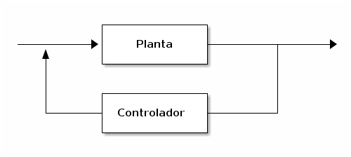
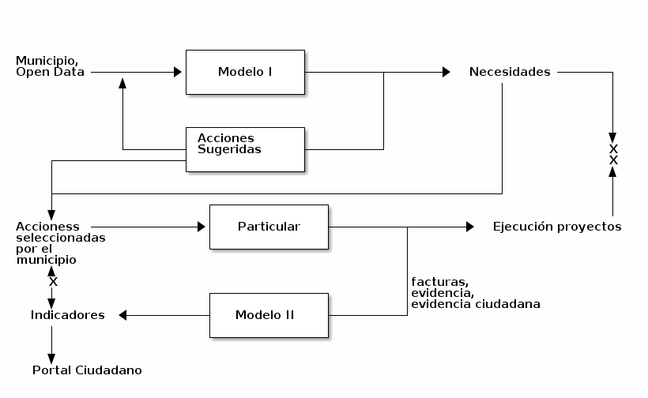
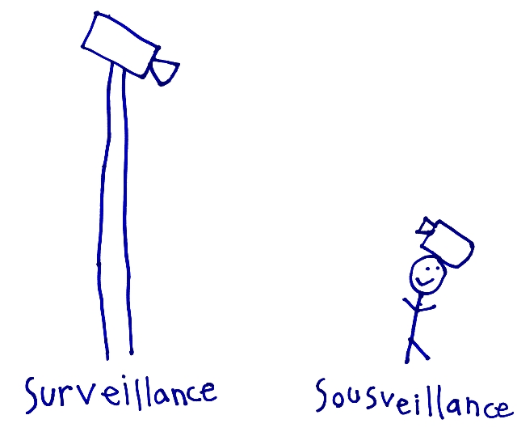

Todo lo que oímos es una opinión, no un hecho.
Todo lo que vemos es una perspectiva, no la verdad.
Estudio fenomenológico de Sistemas Complejos Adaptativos, con el propósito de construir productos de datos que ayuden/soporten a la toma de decisiones y acciones sobre el sistema.

-> Gov, Gov -> DSHay mucha gente trabajando en temas relacionados a este tema y en particular, haciendo cosas de mayor impacto. En lo que sigue, sólo quiero establecer ejemplos de qué se puede hacer en las circunstancias que discutiré.

Vi las mejores mentes de mi generación
destruidas por la locura,
hambrientas histéricas desnudas,
arrastrándose por las calles …
Aullido (Fragmento)
As for the future, your task is not to foresee it,
but to enable it
Blockchain
E-citizen
Cybersyn
Creada por Adolfo De Unánue.